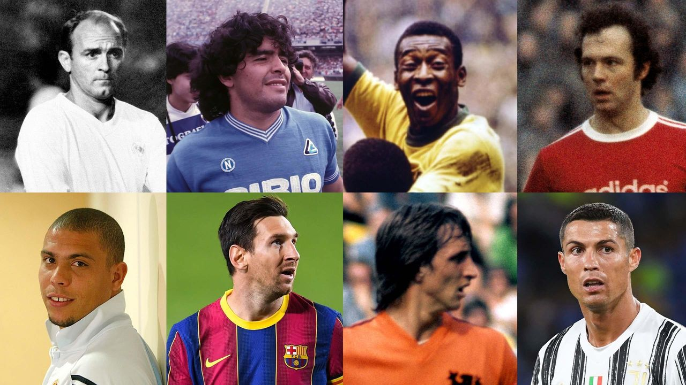
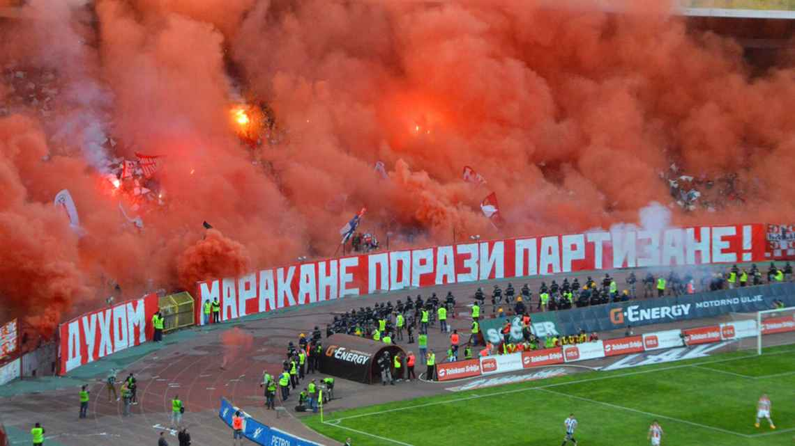
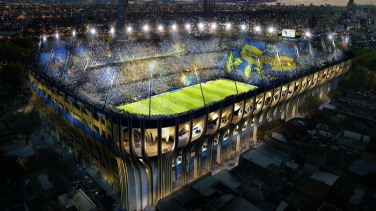
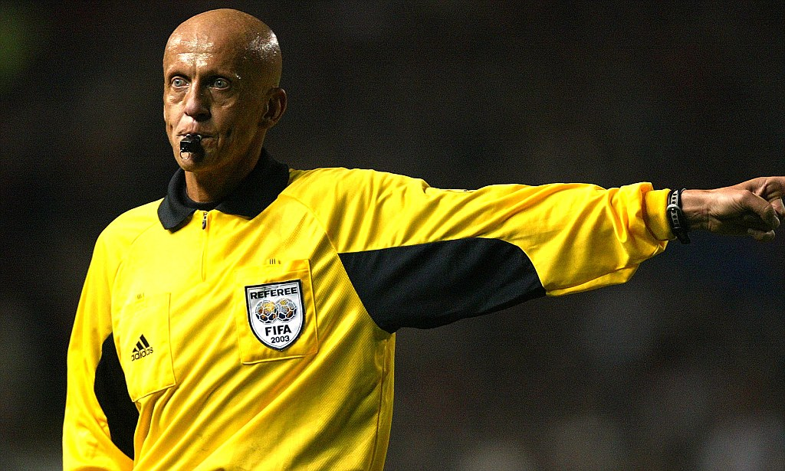
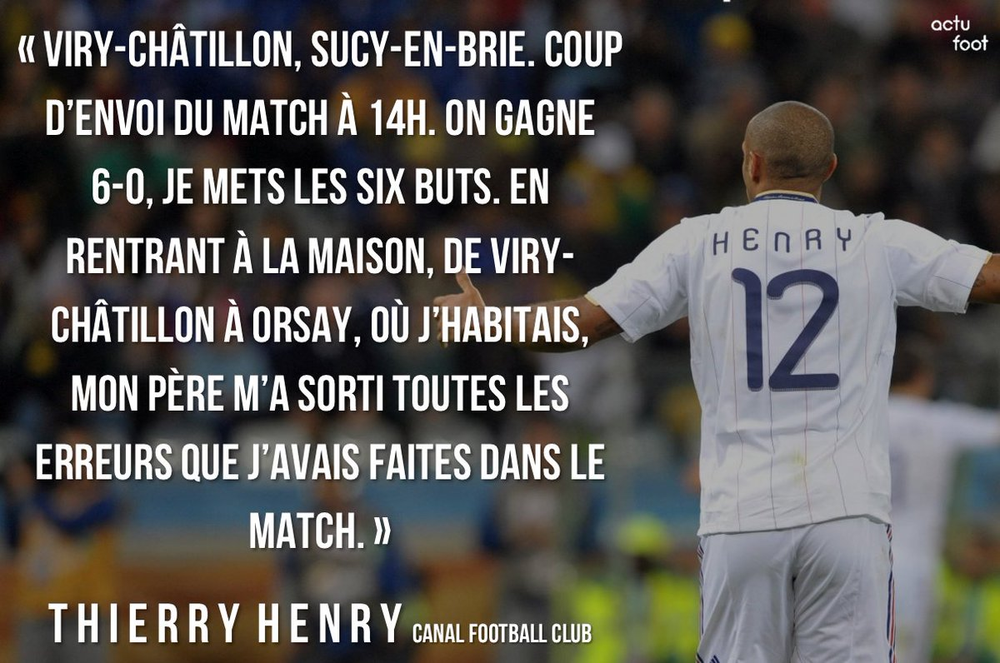

Bienvenue sur Piedballon
Sur ce site, vous trouverez toutes les informations sur le football que vous cherchez.
- Les meilleurs joueurs de football de tous les temps, avec des analyses approfondies de leur style de jeu, de leur palmarès et de leur impact sur le monde du football. 
- Les rivalités les plus intenses et les plus célèbres dans le monde du football, avec des histoires de matches mémorables, de tensions entre joueurs et de rivalités entre clubs. 
- Les stades les plus impressionnants et les plus emblématiques du monde du football, avec des photos, des descriptions détaillées et des informations sur l'histoire de chaque stade. 
- Les règles du football les plus controversées ou difficiles à comprendre, avec des explications claires et des exemples concrets de situations de jeu. 
- Les anecdotes les plus insolites et les plus amusantes dans l'histoire du football, avec des histoires de joueurs, de clubs et de compétitions qui ont marqué l'histoire de ce sport. 